PORTFOLIO SITE
Til denne opgave skulle vi gøre brug af den læring fra alle temaer vi har gennemgået gennem hele 1. semester. Vi skulle samtidig leve op til specifikke krav for hvad sitet skulle indeholde og med underviserne som målgruppe.
Research
Jeg vidste til en start at jeg gerne ville arbejde med farver, og har valgt at arbejde ud fra stilarten Memphis style, da jeg føler mig tiltrukket af legen med farver og former og hvordan denne stil også afspejler mig som designer.
Jeg har med det vi lærte i UX temaet researchet på portfolio sites og kigget på andres måder at
bygge et site op. Jeg
har især lagt mærke til layout og opbygning samt de forskellige design valg.
De indsigter jeg har
taget med mig er: at
portfolio sitet skal afspejle personen bag, at det er vigtigt med en tydelig navigation, at sitet
afspejler det der
vises.
Design
Jeg har som lært i Tema 1, arbejdet ud fra et moodboard. Mit moodboard er fyldt med farver, farvekontraster, former og ideer til opbygning. Jeg har valgt at tilsætte adjektiver der fortæller hvad jeg gerne vil visualisere på mit site: Blikfang, farver, kontrast, personligt og former.
Ud fra dette har jeg lagt mig fast på nogle stilvalg som vist på mit styletile. Jeg har valgt en kreativ font til den største af overskrifter som går igen på siderne og på links. Til resten af overskrifter og tekst har jeg valgt en mere simpel og rolig font. Der skal skabe balance på sitet og ikke tage for meget fokus fra indholdet. Jeg har arbejdet med gestaltloven om nærhed, i forhold til tekst, så det er tydeligt hvad der hører til hvad. Jeg har skabt plads rundt om teksten for at gøre det lettere at læse og arbejdet med størrelser på både overskrifter og tekst content.
Alt visuelt på sitet er tegnet af mig i Illustrator, efter den gennemgang vi havde på Tema 4. Jeg har valgt at farverne fra forsiden skal være gennemgående på alle tegnede elementer. Jeg har brugt farverne til at udtrykke kreativitet, blikfang og kontrast. Hvor den blå står i kontrast til de mere afdæmpede pasteller. Jeg har valgt en gul som ascent farve, der optræder på alle sider. Jeg har valgt at hive noget af baggrunden fra forsiden med ind på de andre sider. For at give det en sammenhæng og rød tråd igennem.
Jeg har brugt photoshop til at beskære mine billeder, så de billeder der hører sammen, har samme format. Jeg har også brugt Photoshop til at croppe nogle af mine billeder runde, for at skabe en hover effekt.
Mock-Up
Jeg har benyttet Adobe XD til at lave en Mock-up af mit site, som vi især brugte på Tema 3. Jeg har lavet en Mock-up for at visualisere det indtryk jeg ønskede at skabe ud fra den wireframe jeg havde tegnet. Jeg har valgt at holde opbygningen af sitet simpelt, så det er farverne der træder frem.
Jeg har skabt en landingpage, som skal være indgangen til mit portfolio, med en præsentation af hvem der står bag og en knap til at starte. Det har jeg både for at pakke content ind og give det en forside, men også for at præsentere det univers der trædes ind i.
Opbygning & Kode
Jeg har valgt en simpel opbygning i grid, hvor det meste content er sat i grids af 2 columns som lært på Tema 1.
Jeg har arbejdet med hover effekter på næsten alle sidder, der skal gøre det første indtryk simpelt, men give sitet interaktivitet når musen kører hen over forskellige knapper og billeder.
Jeg har givet min navigation en class fixed, som gør at den følger med ned, når der scrolles på sitet. Dette for at brugeren hurtigt kan klikke videre til en anden side og nemt kan finde tilbage.
Jeg har valgt at have en burgermenu på mine sider i mobil- og tablet version, sat op med Javascript og CSS classes, denne burgermenu er sat op på samme måde som lært i Tema 5. Det har jeg valgt at gøre for at give disse formater et mere let udtryk, men med tydelighed i, hvor menuen kan findes.
Jeg har på mit animationstema, valgt at sætte to elementer ind fra mit spil, der animerer sat op med Javascript og CSS classes som lært på Tema 4. Jeg har dog haft udfordringer med dem i mobil- og tabletversionen.
Test
Jeg har valgt at teste på mit site løbende og Five-act /tænke-højt testen fra Tema 3. Jeg har bedt
testpersonerne om at
gå på opdagelse på mit site og give feedback på: fonte, billeder, layout, opbygning, design, farver
og logo.
Ud fra testresultaterne har jeg løbende tilrettet mit udtryk og fået en masse nyttig information med
mig.
Jeg har valgt at gøre mine fonte mere simple, skabe et flow der er gennemgående, og arbejde med få
farver i stedet for
hele farvepaletten.
Jeg har også valgt at teste med Bert fra Tema 5 og fået testresultater tilbage der har gjort mig opmærksom på nogle udfordringer på sitet. Her kan jeg se at der er en tendens til at sitet har været forvirrende og jeg har arbejdet med strukturen og brugervenligheden.
Moodboard
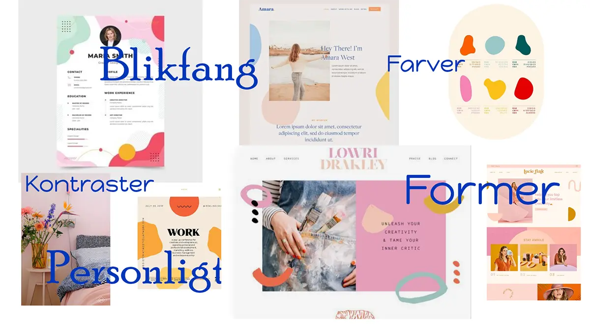
Styletile
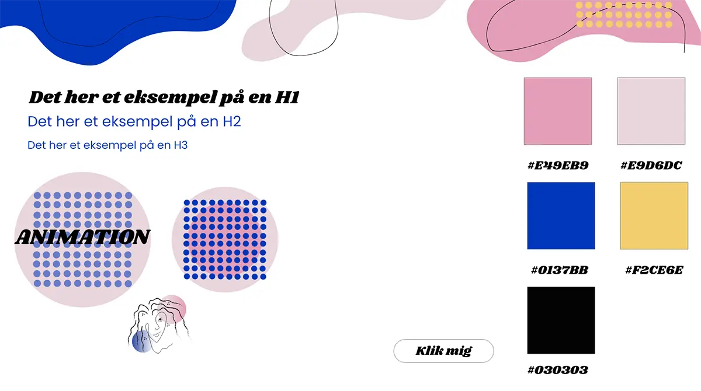
Mockup af portfolio
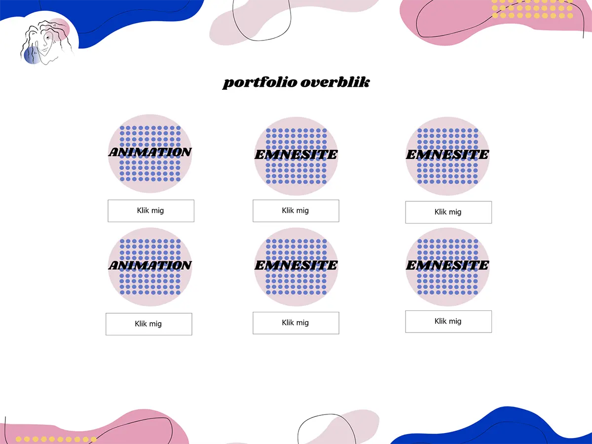Wireframe af portfolio
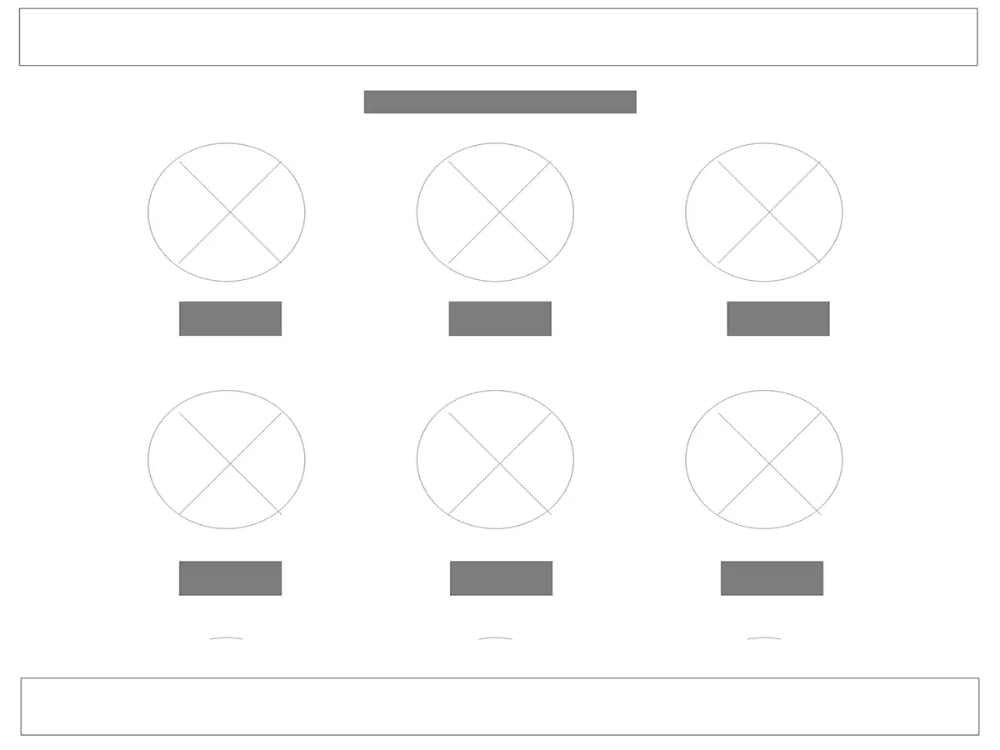
Mockup af UX side
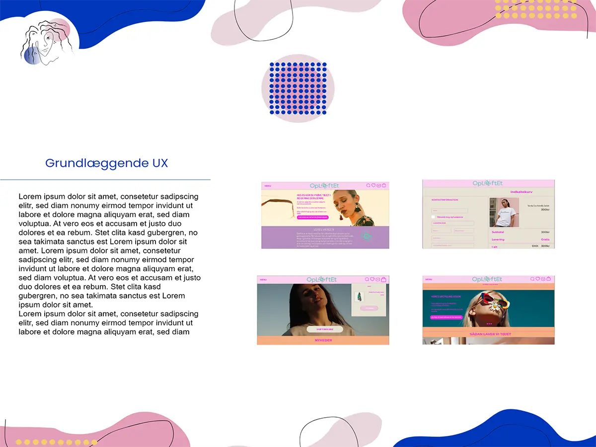Wireframe af UX side
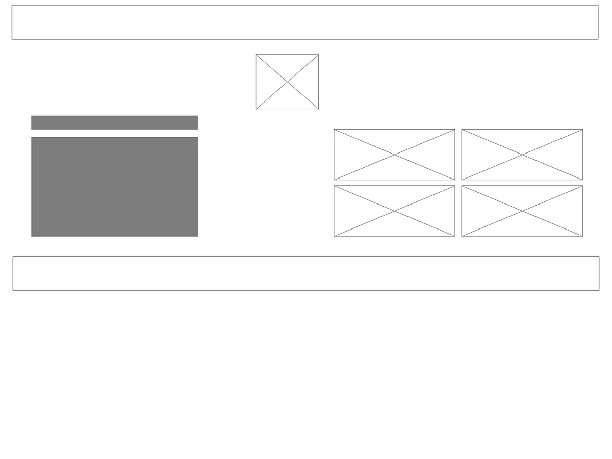
Kode af burger menu
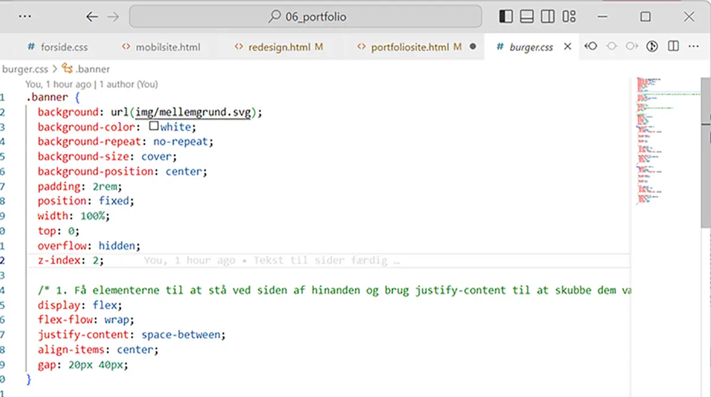
Grid struktur
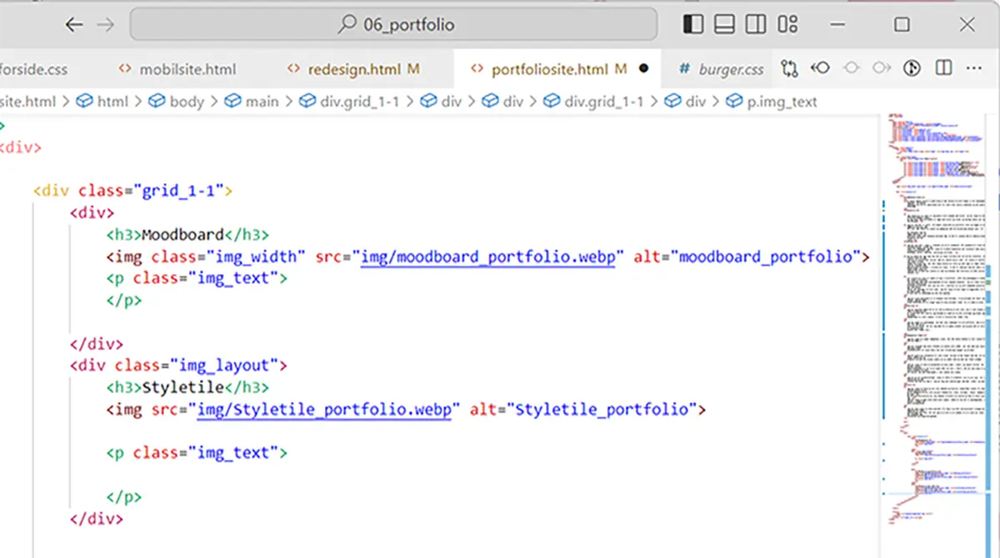
Tænke_højt Test
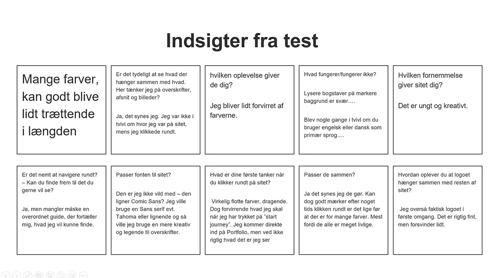Bert
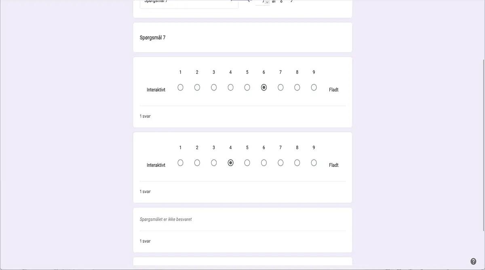
Bert
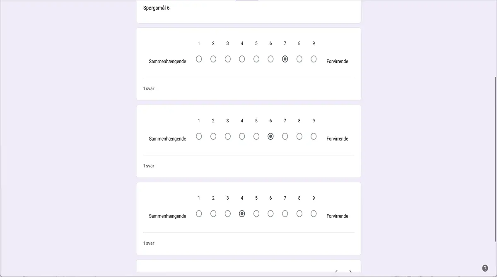